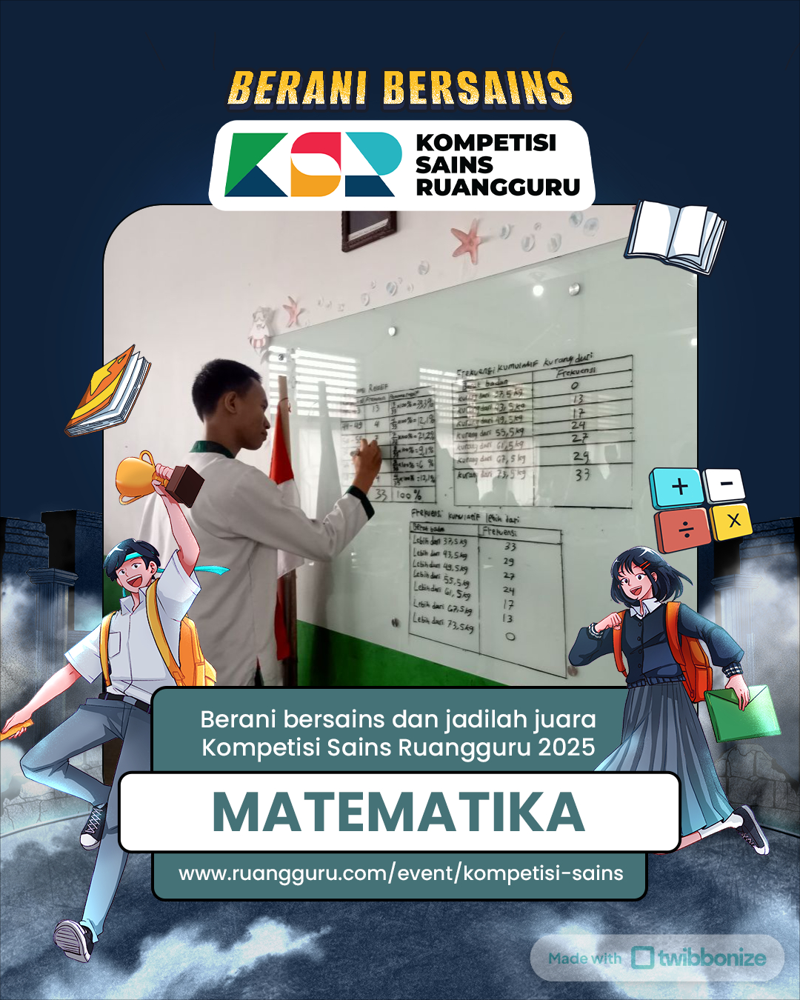

Who Am I?
Tentang Fakhri.
Hai, selamat datang di portofolio digital saya. Saya adalah seorang siswa di MAN 2 Palembang yang memiliki ketertarikan mendalam pada dunia angka dan logika.
Bagi saya, Matematika bukan sekadar pelajaran, melainkan bahasa universal yang mengajarkan cara berpikir sistematis. Di sela-sela kesibukan sekolah, saya gemar mendokumentasikan perjalanan hidup saya—mulai dari pencapaian kecil hingga momen berharga bersama teman-teman.
Location
Palembang, ID
Interest
Math & Logic
Status
Student